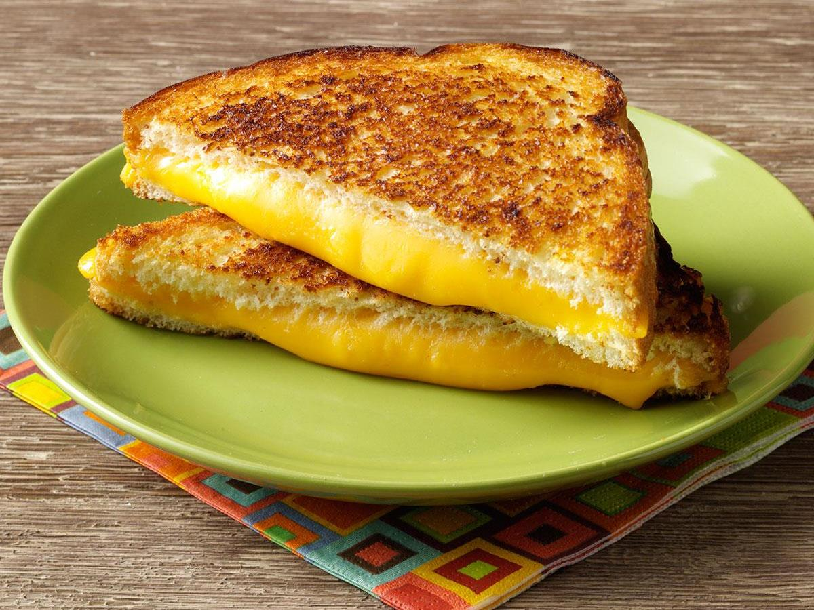

Grilled Cheese
An easy and delicious meal for days that you are too busy to cook

Ingredients
- 2 slices sourdough bread
- 3 tablespoons butter
- 1 cup shredded cheddar
Instructions
- Spread 1 tablespoon butter on one side of each slice of bread
- In a skillet over medium heat, melt one tablespoon of butter
- Place the bread butter side down on the skillet and top each slice of bread with 1/2 cup of cheddar cheese
- Cook until bread is golden and cheese is melted
- Flip one slice of bread on top of the other
- Enjoy!